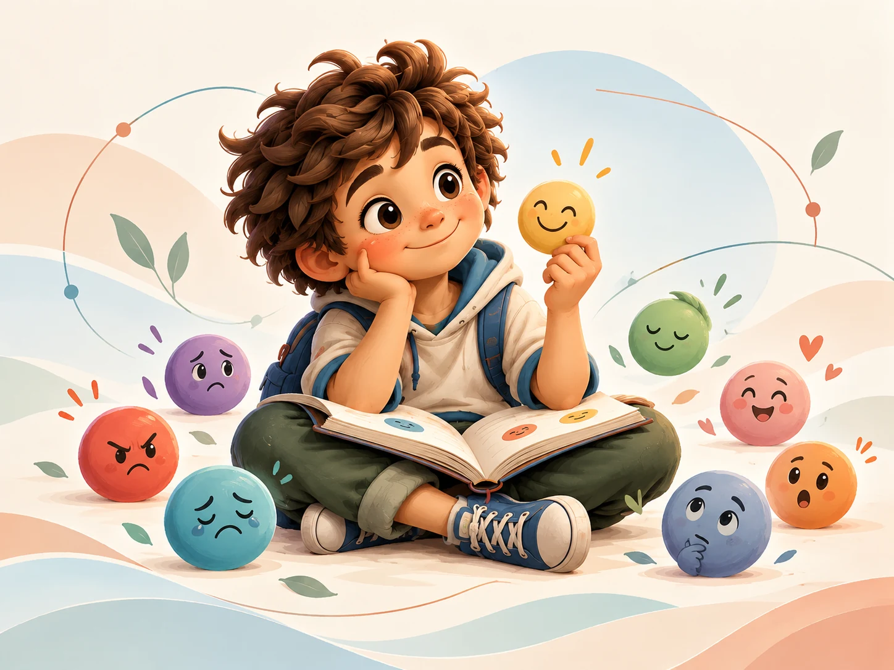

Colección interactiva · 6 a 12 años con una persona adulta
Mente en Raíces
30 aventuras breves para observar cómo aprendemos. Aquí no hay notas, carreras ni una única forma correcta de avanzar.

Mi recorrido en este dispositivo
0 de 30 aventuras exploradas
Mapa de aventuras
Elige lo que quieres explorar hoy
Filtra por capacidad o abre cualquier tarjeta. El progreso se guarda solo en este dispositivo.

Una herramienta de acompañamiento
Jugar también nos ayuda a observar.
Estas experiencias son educativas y no diagnostican. La persona adulta puede anotar qué estrategia ayudó, qué incomodó y cuándo fue mejor hacer una pausa.